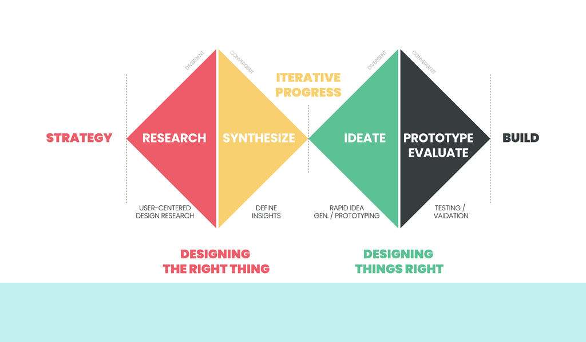

Project 01 · 台南ㄏ勝 · Design Thinking
台南ㄏ勝 Tainan Play
智慧文旅設計思考提案
台南ㄏ勝是這次提案收斂出的構想——這一頁記錄的是雙鑽石設計思考：不創造不存在的痛點，而是回應真實問題；並在 2025 創見南方智慧文旅組拿到第一名。
- 1stSmart Cultural Tourism
- 5雙鑽石階段
- 2025Visioning the South
- PitchNo code — process only
問題的深度，比技術的深度更重要
我們刻意避免「創造痛點」或「發明原本不存在的需求」。比起堆疊技術，我更在意能不能解決真實世界正在發生的問題——透過設計思考，先深入理解人與場域，並在過程中思考不同立場的利益衝突與協調（旅客、商家、政府），再收斂至可行提案。競賽交付的是簡報，不是已上線的 APP；以下逐階段拆解這套思路。
雙鑽石模型：從同理到 MVP 的設計思考
團隊沒有直接跳入技術開發，而是依雙鑽石流程——發散探索問題、收斂定義洞察、再發散構想解法、收斂為最小可行提案——完成整份簡報。台南ㄏ勝是最後的收斂答案；嚴謹的流程是拿第一名的原因。


- 同理 Empathize — 換位思考，建立三大 Persona → 理解「他們在想什麼」。
- 定義 Define — 收斂四大系統性挑戰 → 提煉核心洞察。
- 構思 Ideate — AI × AR × 遊戲化，對應三大痛點逐一落實。
- 原型與測試 — MVP 收斂、種子用戶、數據指標 → 可行路線圖。
- 影響力 Impact — 數位典藏、社群共創、永續營運 → 文化資產守護者。
每一階段在回答什麼
行前迷茫？→ AI 推薦。現地單調？→ AR 沉浸。結束無成就感？→ 遊戲化收集與商家閉環。不貪大求全，用 MVP 驗證假設——這就是評審看到的設計思考深度。
The problem space I had to design for
在動用任何設計思考工具之前，我先讀懂命題：智慧文旅組要回應的是「文資保存 × 智慧觀光治理」這類都市現場的結構性問題——觀光、商業與里弄日常高度擠壓，並非只限單一街區。
官方命題
智慧文旅組由成大社會科學院出題：文資保存 × 智慧觀光治理——以神農街／海安路為例的共融生活圈。其中神農街／海安路是命題給的指示範例，用來理解這類場域的矛盾；我們的提案回應的是台南整體文旅生態，MVP 試點則收斂在安平古堡區、赤崁樓周邊。觀光帶來經濟，也帶來租金、文資損耗與過度商業化——保存與發展之間的張力，就是設計思考的起點。
Suggested thinking directions
The brief did not prescribe a product. It gave three prompts we used as checkpoints through empathize → ideate:
- How can AI and data help optimize the distribution of cultural assets and tourism hotspots — balancing preservation and development?
- From tourists, merchants, and government — how can we analyze conflicting needs and find room for coordination?
- How can smart guided tours or interactive experiences make cultural preservation something people can feel and participate in daily?
深度挖掘旅遊生態的真實痛點
第一階段做的是「換位思考」——不只站在遊客角度，也從台南在地老店、文化資產的視角觀察現狀，並建立三大目標使用者人物誌（Persona）。
利害關係人：利益衝突與協調
智慧文旅不是單一使用者的問題。過程中我們必須釐清旅客、商家、政府各自在意什麼、哪裡會衝突，以及方案如何協調——每個功能都要能回答：誰受益、誰可能受損、如何平衡。
旅客
在意：深度體驗、有趣互動、清楚動線。
衝突：人潮過度集中、資訊雜亂、體驗流於表面。
協調：AI 推薦分散路線、遊戲化提升參與感。
商家
在意：穩定客流、合理轉換、品牌故事被看見。
衝突：同質競爭、觀光波動、過度依賴打卡熱點。
協調：店家任務與徽章兌換，把線上互動導向線下消費。
政府
在意：文資保存、觀光治理、里弄生活品質。
衝突：保存 vs. 開發、流量管理、過度商業化。
協調：數據掌握熱點分布、引導分流、兼顧保存與活化。
設計思考不是選邊站，而是找多方共好的切入點——旅客得到更好的探索體驗，商家獲得可持續的到店轉換，政府則透過智慧治理平衡保存與發展。
三大目標使用者 Persona
文化探索型旅人
他們在想什麼：想深入了解台南歷史，不想只是吃吃喝喝。
核心痛點：行前查一堆資料、規劃極難；現地資訊碎片化，體驗依然單調。
親子族群
他們在想什麼：希望寓教於樂，讓孩子邊玩邊學，不要只看手機。
核心痛點：古蹟導覽對兒童太枯燥，現場缺乏吸引孩子的互動遊戲。
在地居民／國際背包客
他們在想什麼：想找鮮為人知的巷弄故事——背包客要深度文化，居民想重新認識家鄉。
核心痛點：缺乏了解文化內涵的管道，沒有工具就難以發現隱藏景點。
將問題收斂成核心洞察
第二階段把觀察到的亂象收斂，歸納出台南文旅面臨的四大系統性挑戰：
- 旅行淺碟化——打卡式觀光、商品相似，缺乏歷史脈絡，停留短、回訪低。
- 資訊孤島——巷弄故事、古蹟、美食資訊散落各平台，缺乏主題串聯。
- 互動性不足——傳統導覽無法吸引 18–35 歲數位原生世代，缺乏即時雙向互動。
- 城市文化未活化——廟宇、老街、巷弄的文化符號缺乏科技轉譯，難以展現魅力。
核心洞察（Insight）
使用者旅程的失敗點，可以用一句話定義——「行前迷茫、實地單調、結束後毫無成就感」。這成為整份提案的突破口。
三大科技與遊戲化機制的交織
確立「提高互動性、串聯資訊、創造成就感」的目標後，團隊以 AI 推薦 × AR 沉浸 × 遊戲化探索 回應三大痛點，核心願景是：
把台南的故事，變成一場可收集、可互動、可復返的城市遊戲。
思維一：行前迷茫與資訊孤島 → AI 個人化推薦
不讓用戶痛苦地做功課，以數據驅動系統動態推薦路線：
- 用戶行為數據收集——瀏覽、互動偏好、停留時間、店家類型、路線選擇
- 機器學習人群分流——自動分類（美食愛好者、歷史探索者、親子家庭等）
- 動態路由演算法——依即時位置、已完成任務與偏好，智能調整推薦路線
思維二：現地體驗單調 → 旗艦 AR 場景的文化轉譯
- 鯨爆事件——轉化為生態教育：AR 模型互動，了解鯨魚解剖與海洋生態。
- 日治摩登街景——AR 重現州廳、林百貨與電車路線，一秒穿梭時空。
- 赤崁樓多重身世——分層顯示不同時期樣貌，「尋找虛擬碑拓」任務讓看古蹟變解謎。
思維三：結束無成就感＋帶動地方經濟 → 遊戲化與商業閉環
- 數位徽章收集——AR／掃描解鎖徽章，附視覺與歷史說明。
- 店家互動任務——結合百年老店故事線，引導尋找線索，把線上流量轉為線下人潮。
- 成就與點數兌換——進度條可換數位獎勵或實體商品、美食優惠，解鎖「台南玩家」榮譽，提升回訪率。
以 MVP 思維小步快跑
許多提案想做得太大而無法落地。這裡展現 MVP 收斂——只做能驗證核心假設的功能，以數據決定下一步。（競賽階段以簡報與故事板呈現，未實際開發。）
MVP 範圍收斂（不貪多）
- 試點商圈——第一階段只選 1–2 區：安平古堡區、赤崁樓周邊。
- 核心功能——GPS 任務、AR 拍照互動、商家兌換、後台數據——足以驗證假設。
三階段執行里程碑
- Phase 1 — 需求確認、UI/UX 原型、與第一批商家洽談合作。
- Phase 2 — MVP 開發與內測，邀請種子用戶試玩，收集回饋優化。
- Phase 3 — 公開上線、行銷推廣、擴展合作商家。
成功指標（Metrics）
不畫大餅，用數據驗證：用戶留存率、任務完成率、商家轉換率。
簡報迭代（競賽 Test 階段）
| Round | What we changed after feedback |
|---|---|
| Oct 2 draft | Cut feature stacking; led with personas and core insight. |
| Mid-review | Strengthened MVP scope and merchant co-good intent. |
| Oct 14 final deck | Unified 台南ㄏ勝 naming; tightened three thinking threads. |
| Oct 18 final | 完整呈現設計思考——從同理到影響力路線圖。 |
數位科技守護文化記憶
設計思考最後一環是永續性與社會價值——台南ㄏ勝不只是娛樂工具，更是文化資產的數位守護者。
文化資產保存
以 NFC 標籤與數位典藏系統化保存文物資料；透過影像故事將傳統技藝、節慶民俗等無形文化資產數位化。
社群共創
提供平台讓在地居民分享小巷故事，形成由下而上的全民共創文化資料庫。
長期營運策略
整合學術界、科技產業與文化機構，探索多元資金與商業模式，確保平台穩定收益，而非依賴一次性補助。
同時，徽章兌換與店家故事線活化在地商業——創造遊客、商家與城市三贏，提升台南國際能見度。
智慧文旅組第一名
2025 年 10 月 18 日，我們在「2025 創見南方：共構未來生活提案競賽」獲得智慧文旅組第一名。從雙鑽石流程的每一階段——在想什麼、如何落實——到 MVP 與永續藍圖，完整的設計思考讓提案在決選台上站得住腳。

對我而言，台南ㄏ勝證明：比起技術的深度，問題的深度更重要——先同理、再定義、再發想、再收斂 MVP，用設計思考解決真實問題，可以贏過盲目堆疊功能的提案。